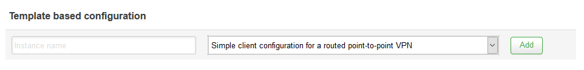
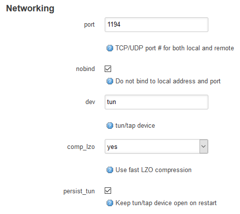
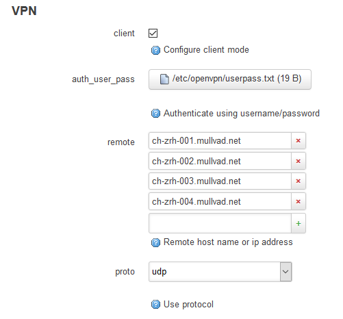
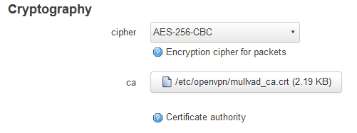
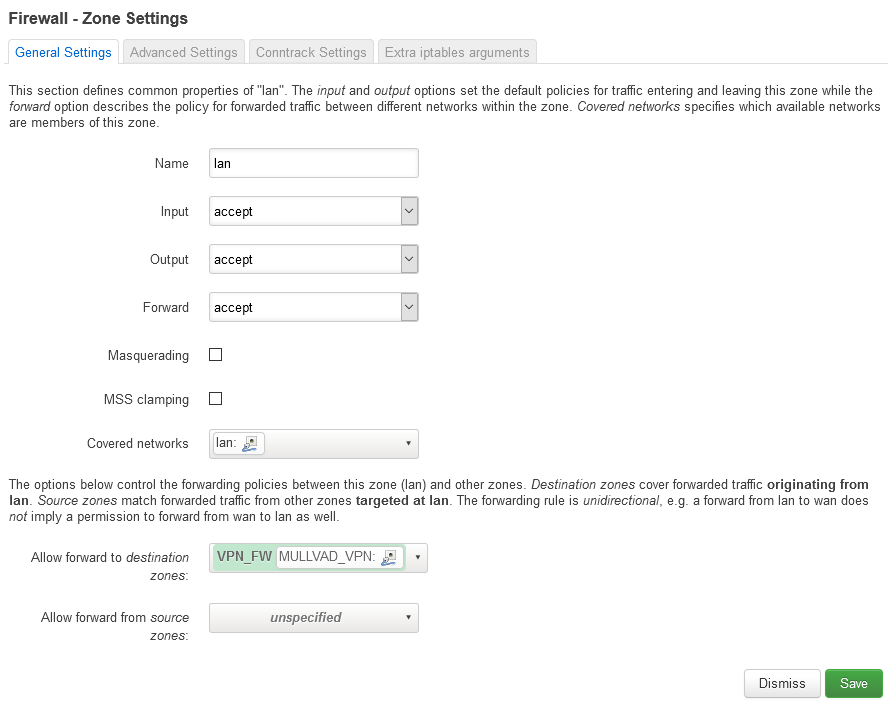
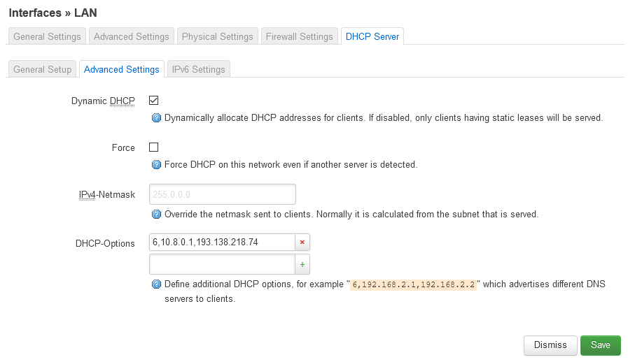
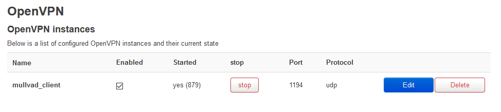
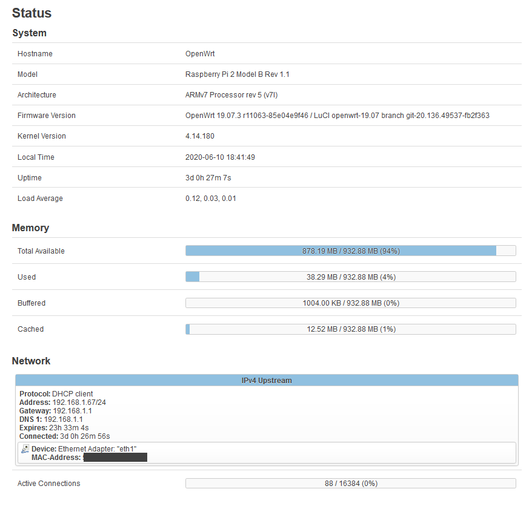

Recyclage de Rasperry Pi: routeur & tunnel VPN
Je prépare actuellement un setup réseau pour une habitation, ce dernier étant un peu particulier car il ne disposera pas d’accès internet dédié.
Mais qui dit pas d’accès internet dédié, ne dit pas pas de réseau local ni pas d’accès internet.
Le cahier des charges ressemble donc à ça:
- Besoin d'un routeur DHCP.
- Besoin de distribuer au réseau local un accès internet quand c'est possible. La source étant variable il faut supporter plusieurs entrées différentes.
- La source pouvant parfois ne pas être de confiance, il est obligatoire qu'elle soit utilisée à travers un VPN.
Ajoutez à ça une volonté de minimalisme et de recyclage technologique et vous l'avez: on va utiliser un Raspberry Pi.
Raspberry Pi & Performances
Ancienne box Kodi ayant prit sa retraite trop tôt voici la bête:
Raspberry Pi 2 B v1.1
- Processeur Broadcom BCM2836 à 900Mhz
- 1024MB de RAM
- 4 ports USB 2.0
- 1 port ethernet 100Mbits
Limitations
Comme vous pouvez le remarquer le hardware limite assez les performances et la charge tenable par notre routeur.
Un port USB 2.0 avec adaptateur 1000Mbits est considéré comme atteignant ~300Mbits max c'est donc la vitesse maximale atteignable si nous utilisons 2 adaptateurs et ne touchons pas au rj45 natif.
Pour l'utilisation qui sera faites du miens ça ne sera absolument pas dérangeant. Il n'y aura jamais plus de 5 appareils accédant activement au web externe en simultané.
Choix de la distribution
Pour la configuration souhaitée nous avons une pléthore de façons de faire possibles. Retour sur les solutions les plus rependues:
Raspbian en natif
Serveur DHCP en utilisant isc-dhcp-server, DNS via bind, VPN via OpenVPN et redirection du trafic via iptables.
Solution non retenue car je cherchais, en plus de répondre au besoin initiale, à me former / expérimenter quelque chose de nouveau. Je souhaitais donc utiliser un OS "conçu pour ça" que je ne connaissais pas / pas assez (à défaut de pouvoir tester une nouvelle solution commerciale).
OPNsense
Utilisant pfSense dans mon lab virtual j'avais envie d'utiliser OPNsense afin d’expérimenter les 2 rivaux.
Le problème ici est le manque du support ARM, il y a bien des builds customs qui trainent et un support prévu pour le rpi 4 prochainement mais à l'heure actuelle je trouve cela trop "bidouille", encore plus pour le rpi 2.
pfSense
Même constat que pour OPNsense.
OpenWrt
L'enfant mal-aimé à qui je n'ai jamais donné sa chance, c’était enfin son heure de gloire !
- Raspberry Pi 2 officiellement supporté
- Plugin openVPN
- Drivers USB 1, 2, 3
- Drivers NDIS
- Drivers ath9k
Exactement ce que je cherchais, place à la configuration.
Configuration OpenWrt
Une fois votre image téléchargée, copiée et la machine démarrée il faut faire quelques paramétrages de base. Je vous conseil de relier le routeur à un switch ou réseau déjà existant via son interface rj45 pour ne pas avoir à installer des drivers hors ligne.
Réseau
Je ne vais pas m’étendre sur ce point, il dépend de la façon dont vous souhaitez designer votre réseau.
Sachez que de base l'IP du routeur est *192.168.1.1, l'identifiant root et que le mot de passe est vide*.
La documentation officielle est disponible ici.
Drivers
Souhaitant couvrir en entrée toutes les configurations que je puisse rencontrer il me faut les drivers pour les périphériques suivants:
- Ma carte wifi USB
- Mon adaptateur ethernet => USB
- Mon téléphone (Android) en partage de connexion USB
Pour cela très simple:
opkg update
opkg install kmod-ath9k-htc
opkg install kmod-usb-net-rtl8152
opkg install kmod-usb-net kmod-usb-net-cdc-ether kmod-usb-net-rndis
Configuration VPN
Maintenant nous allons créer l’accès au VPN ainsi que les règles de pare-feu associées. J'utilise ici mullvad comme VPN mais vous pouvez faire la même chose avec un autre fournisseur.
Installation OpenVPN
On commence par un update des repos ainsi que l'installation des paquets nécessaires:
opkg update
opkg install openvpn-openssl
opkg install luci-app-openvpn
opkg install openssl-util
Une fois cela fait redémarrez le routeur.
Ajout d'une connexion VPN
Direction VPN > OpenVPN puis dans ajoutez une configuration mullvad_client basée sur le template routed point-to-point VPN.

Passez en mode configuration avancée puis modifiez *l'onglet Networking ____* comme ceci (si un paramètre n'est pas affiché de base alors ajoutez le par le menu en bas à gauche):

- port 1194
- ifconfig: Supprimez la ligne si elle est présente
- nobind: Coché
- dev: tun (On cherche à sortir sur internet, pas sur le réseau local mullvad.)
- persist_tun: Coché. (Sans ça votre interface virtuelle sera out à chaque reboot.)
*Onglet VPN:*

- client: Coché
- auth_user_pass: Entrez /etc/openvpn/userpass.txt le fichier n'existe pas encore mais nous le créerons après.
- remote: Liste des serveurs que vous souhaitez utiliser, disponible ici. Attention, afin de valider la dernière ligne vous devez créer une ligne vide !
- proto: udp
Onglet *Cryptography*:

- cipher: AES-256-CBC
- ca: Uploadez le fichier mullvad_ca.crt que vous pouvez télécharger sur cette page. Dans l'onglet Linux récupérez l'archive, le certificat se trouve à l’intérieur.
N'oubliez pas de sauvegarder & appliquer.
Création de l'interface
Direction Network > Interfaces puis Add new interface:
- Name: MULLVAD_VPN
- Protocol: Unmanaged
- Bridge interfaces: décoché
- Interface: tun0 (Si il n'apparait pas, sélectionnez la dernière ligne custom et entrez tun0)
Terminez en cliquant sur "Create interface"
SSH
Petit passage en CLI, connectez vous en root sur le rpi:
ssh root@$ip
Pour commencer nous créons le fichier /etc/openvpn/userpass.txt vu plus haut (j'utilise vim car il est packagé avec la distro):
vim /etc/openvpn/userpass.txt
Le fichier doit contenir 2 lignes:
- Votre identifiant mullvad *SANS ESPACE*
- Le mot de passe associé a l'identifiant qui est le même pour tout le monde, la lettre m
cat > /etc/openvpn/userpass.txt << EOF
VOTRE_ID
m
EOF
chmod 0400 /etc/openvpn/userpass.txt
Une fois cela fait nous allons en profiter pour creer les regles de pare-feu tel que:
- Le LAN ne puisse acceder à internet uniquement par le VPN
- L'accés au LAN via internet est interdit
cat >> /etc/config/firewall << EOF
config zone
option name 'VPN_FW'
option input 'REJECT'
option output 'ACCEPT'
option forward 'REJECT'
option masq '1'
option mtu_fix '1'
option network 'MULLVAD_VPN'
config forwarding
option dest 'VPN_FW'
option src 'lan'
EOF
Repartez maintenant sur l'interface web dans Network > Firewall > lan > Edit puis retirez WAN de la liste des zones autorisées en sortie:

Derniers réglages
Rendez vous maintenant dans Network > Interfaces > Edit lan > DHCP Server > Advanced Settings

Dans DHCP-Options entrez 6,10.8.0.1,193.138.218.74 et sauvegardez.
Le plugin OpenVPN ayant un bug sur la persistance de la configuration il faut créer une tache planifiée:
Rendez-vous dans System > Scheduled Tasks et insérez la tache suivante:
*/1 * * * * sed -i '/secret/d' /tmp/etc/openvpn-mullvad_client.conf
Ensuite direction VPN > OpenVPN, cochez la case Enabled de votre instance VPN puis démarrez la en appuyant sur start.

Si tout s'est bien déroulé alors vous avez terminé ! Vous devriez récupérer votre accès internet, pour vérifier que vous êtes bien connecté via le VPN vous pouvez vous rendre sur le site de mullvad qui vous indiquera si vous passez par leur service:
En cas de problème n'oubliez pas qu'OpenWrt affiche ses logs dans le GUI, à retrouver dans Status > System Log.
Bilan
Nous voilà donc avec un routeur servant de serveur DHCP local lorsqu'il n'a aucun accès à internet et servant de tunnel VPN quand c'est le cas.
La fonctionnalité que je cherchais à avoir était la flexibilité de la connexion source. Que ça soit via rj45, wifi, ou même tethering, dés lors que le rpi récupère une connexion internet il nous permet de nous en servir via le VPN sans avoir à interagir avec un GUI ou paramétrage annexe, et ce pour l'assemble de nos périphériques reliés.
Performances & Débits
Voilà maintenant prés d'une semaine que je test la config et je ne vois aucune différences en terme de latence par rapport à une connexion internet directe.
Néanmoins vous pouvez noter que je ne possède pas de connexion fibrée, mon retour se base uniquement sur des connexions vADSL & 4G.
Coté hardware voici quelques graphs en pleine utilisation (4 machines à ce moment):

Je suis donc très content du résultat. Si je devais améliorer le setup la première chose à faire serait d'obtenir un Pi nouvelle version afin de pouvoir avoir des débits max plus élevés.
Le top serait d'avoir la future version ARM d'ESXi tournant sur la machine afin de pouvoir s'amuser, mais ne possédant pas la machine et la version ARM d'ESXi étant encore dans les cartons, nous verrons cela au moment voulu...